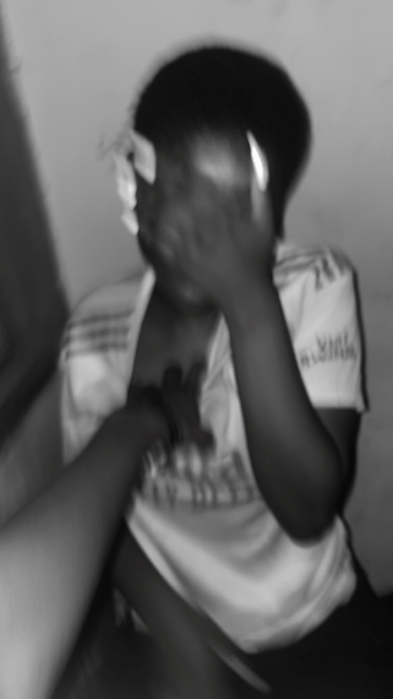
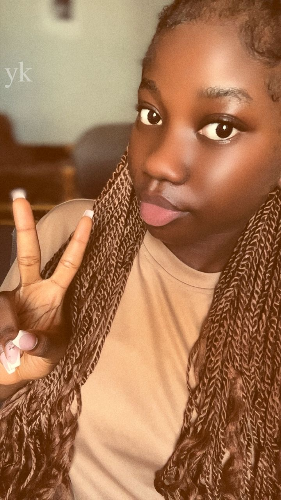

Chapter 01
The beginning.
Some stories don't arrive with a warning. They simply become part of you before you realise how much they matter.

And somehow, this became part of my story.
Chapter 02
The little things.
It's the small moments that stay: the conversations, the laughs, the looks, and all the ordinary moments that somehow became special.

Little moments. Big memories.
Chapter 03
Us.
Not perfect. Not always easy. Just real — and worth remembering.
One more memory I never want to forget.
Chapter 04
What I want you to know.
You matter to me in ways that are difficult to fit into a screen. This little world is my way of making space for those words.
Chapter 05
Still writing.
Maybe the best part is that the story isn't finished. There are still places to go, memories to make, and pages we haven't written.
A letter
For Mela.
Thank you for being part of my story. Whatever the next pages look like, I will always be grateful for the moments that brought us here.
Love,
Alfred
Open when…